The Synthetic Aperture Personality Assessment (SAPA) is a web based personality assessment project (https://www.sapa-project.org/). The purpose of SAPA is to find patterns among the vast number of ways that people differ from one another in terms of their thoughts, feelings, interests, abilities, desires, values, and preferences (Condon & Revelle, 2014; Revelle et al., 2010). In this example, we will use a subset of SAPA (16 items) sampled from the full instrument (80 items) to develop online measures of ability. These 16 items measure four subskills (i.e., verbal reasoning, letter series, matrix reasoning, and spatial rotations) as part of the general intelligence, also known as g factor. The “sapa_data.csv” dataset is a data frame with 1525 individuals who responded to 16 multiple-choice items in SAPA. The original dataset is included in the psych package (Revelle, 2022). The dataset can be downloaded from here. In addition, the R codes for the item response theory (IRT) analyses presented on this page are available here.
In our example, we will conduct IRT and other relevant analyses using the following packages:
| Package | URL |
|---|---|
| Exploratory Data Analysis | |
| DataExplorer | http://CRAN.R-project.org/package=DataExplorer |
| ggcorrplot | http://CRAN.R-project.org/package=ggcorrplot |
| Psychometric Analysis | |
| psych | http://CRAN.R-project.org/package=psych |
| lavaan | http://CRAN.R-project.org/package=lavaan |
| mirt | http://CRAN.R-project.org/package=mirt |
| ShinyItemAnalysis | http://CRAN.R-project.org/package=ShinyItemAnalysis |
We have already installed and used some of the above packages in the
CTT section.
Therefore, we will only install the new R packages
(lavaan and mirt) at this time and
then activate all the required packages one by one using the
library() command:
# Install the missing packages
install.packages(c("lavaan", "mirt"))
# Activate the required packages
library("DataExplorer")
library("ggcorrplot")
library("psych")
library("lavaan")
library("mirt")
library("ShinyItemAnalysis")We will use lavaan (Rosseel et al., 2023) to conduct confirmatory factor analysis and mirt (Chalmers, 2022) to estimate dichotomous and polytomous IRT models.
🔔 INFORMATION: There are many other packages for estimating IRT models in R, such as ltm (Rizopoulos, 2006), eRm (Mair et al., 2020), TAM (Robitzsch et al., 2021), and irtoys (Partchev & Maris, 2017). I prefer the mirt package because it includes functions to estimate various IRT models (e.g., unidimensional, multidimensional, and explanatory IRT models), additional functions to check model assumptions (e.g., local independence), and various tools to visualize IRT-related objects (e.g., item characteristic curve, item information function, and test information function). You can check out Choi & Asilkalkan (2019) for a detailed review of IRT packages available in R.
We will begin our analysis by conducting exploratory data analysis (EDA). As you may remember from the CTT section, we use EDA to check the quality of our data and identify potential problems (i.e., missing values) in the data. In this section, we will import sapa_data.csv into R and review the variables in the dataset using descriptive statistics and visualizations.
First, we need to set up our working directory. I have created a new folder called “IRT Analysis” on my desktop and put our data (sapa_data.csv) into this folder. Now, we will change our working directory to this new folder (use the path where you keep these files in your own computer):
setwd("C:/Users/Okan/Desktop/IRT Analysis")Next, we will import the data into R using the
read.csv() function and save it as “sapa”.
sapa <- read.csv("sapa_data.csv", header = TRUE)Using the head() function, we can now view the first 6
rows of the sapa dataset:
head(sapa) reason.4 reason.16 reason.17 reason.19 letter.7 letter.33 letter.34 letter.58 matrix.45 matrix.46 matrix.47
1 0 0 0 0 0 1 0 0 0 0 0
2 0 0 1 0 1 0 1 0 0 0 0
3 0 1 1 0 1 0 0 0 1 1 0
4 1 0 0 0 0 0 1 0 0 0 0
5 0 1 1 0 0 1 0 0 1 1 0
6 1 1 1 1 1 1 1 1 1 1 1
matrix.55 rotate.3 rotate.4 rotate.6 rotate.8
1 1 0 0 0 0
2 0 0 0 1 0
3 0 0 0 0 0
4 0 0 0 0 0
5 0 0 0 0 0
6 0 1 1 1 0We can also see the names and types of the variables in our dataset
using the str() function:
str(sapa)'data.frame': 1525 obs. of 16 variables:
$ reason.4 : int 0 0 0 1 0 1 1 0 1 1 ...
$ reason.16: int 0 0 1 0 1 1 1 1 1 1 ...
$ reason.17: int 0 1 1 0 1 1 1 0 0 1 ...
$ reason.19: int 0 0 0 0 0 1 1 0 1 1 ...
$ letter.7 : int 0 1 1 0 0 1 1 0 0 0 ...
$ letter.33: int 1 0 0 0 1 1 1 0 1 0 ...
$ letter.34: int 0 1 0 1 0 1 1 0 1 1 ...
$ letter.58: int 0 0 0 0 0 1 1 0 1 0 ...
$ matrix.45: int 0 0 1 0 1 1 1 0 1 1 ...
$ matrix.46: int 0 0 1 0 1 1 1 1 0 1 ...
$ matrix.47: int 0 0 0 0 0 1 1 1 0 0 ...
$ matrix.55: int 1 0 0 0 0 0 0 0 0 0 ...
$ rotate.3 : int 0 0 0 0 0 1 1 0 0 0 ...
$ rotate.4 : int 0 0 0 0 0 1 1 1 0 0 ...
$ rotate.6 : int 0 1 0 0 0 1 1 0 0 0 ...
$ rotate.8 : int 0 0 0 0 0 0 1 0 0 0 ...The dataset consists of 1525 rows (i.e., examinees) and 16 variables
(i.e., SAPA items). We can get more information on the dataset using the
introduce() and plot_intro() functions from
the DataExplorer package (Cui,
2020):
DataExplorer::introduce(sapa)
DataExplorer::plot_intro(sapa)| rows | 1,525 |
| columns | 16 |
| discrete_columns | 0 |
| continuous_columns | 16 |
| all_missing_columns | 0 |
| total_missing_values | 25 |
| complete_rows | 1,523 |
| total_observations | 24,400 |
| memory_usage | 101,832 |
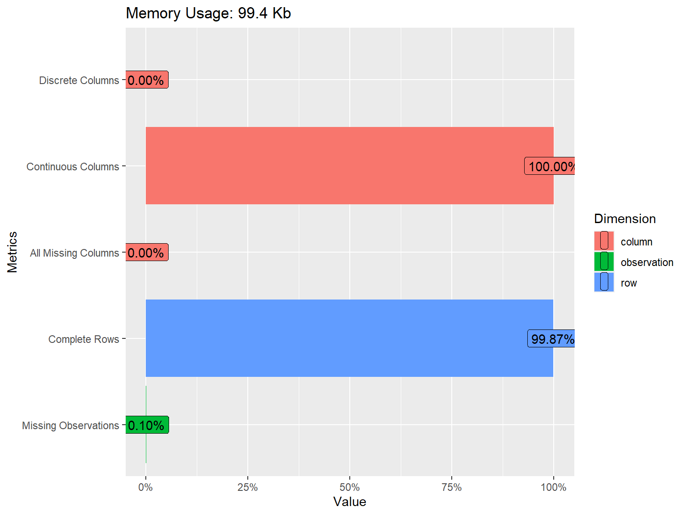
The plot above shows that all of the variables in the dataset are
continuous. We also see that some of the variables have missing values
but the proportion of missing data is very small (only 0.10%). To have a
closer look at missing values, we can visualize the proportion of
missingness for each variable using plot_missing() from
DataExplorer.
DataExplorer::plot_missing(sapa)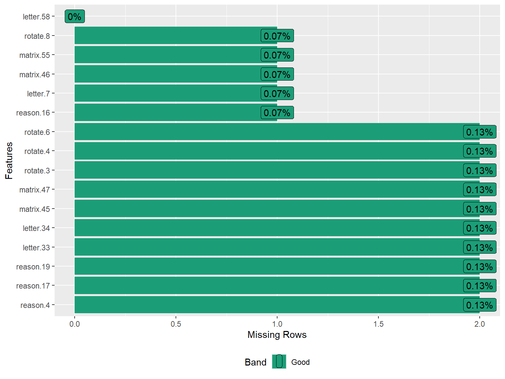
To obtain a detailed summary of the sapa dataset, we will use the
describe() function from the psych package
(Revelle, 2022).
psych::describe(x = sapa) vars n mean sd median trimmed mad min max range skew kurtosis se
reason.4 1 1523 0.64 0.48 1 0.68 0 0 1 1 -0.58 -1.66 0.01
reason.16 2 1524 0.70 0.46 1 0.75 0 0 1 1 -0.86 -1.26 0.01
reason.17 3 1523 0.70 0.46 1 0.75 0 0 1 1 -0.86 -1.26 0.01
reason.19 4 1523 0.62 0.49 1 0.64 0 0 1 1 -0.47 -1.78 0.01
letter.7 5 1524 0.60 0.49 1 0.62 0 0 1 1 -0.41 -1.84 0.01
letter.33 6 1523 0.57 0.50 1 0.59 0 0 1 1 -0.29 -1.92 0.01
letter.34 7 1523 0.61 0.49 1 0.64 0 0 1 1 -0.46 -1.79 0.01
letter.58 8 1525 0.44 0.50 0 0.43 0 0 1 1 0.23 -1.95 0.01
matrix.45 9 1523 0.53 0.50 1 0.53 0 0 1 1 -0.10 -1.99 0.01
matrix.46 10 1524 0.55 0.50 1 0.56 0 0 1 1 -0.20 -1.96 0.01
matrix.47 11 1523 0.61 0.49 1 0.64 0 0 1 1 -0.47 -1.78 0.01
matrix.55 12 1524 0.37 0.48 0 0.34 0 0 1 1 0.52 -1.73 0.01
rotate.3 13 1523 0.19 0.40 0 0.12 0 0 1 1 1.55 0.40 0.01
rotate.4 14 1523 0.21 0.41 0 0.14 0 0 1 1 1.40 -0.03 0.01
rotate.6 15 1523 0.30 0.46 0 0.25 0 0 1 1 0.88 -1.24 0.01
rotate.8 16 1524 0.19 0.39 0 0.11 0 0 1 1 1.62 0.63 0.01From the output above, we can see the number of individuals who responded to each SAPA item, the mean response value (i.e., proportion-correct or item difficulty), and other descriptive statistics. We see that most SAPA items have moderate difficulty values although the rotation items (i.e., rotate.3, rotate.4, rotate.6, and rotate.8) are more difficult than the remaining items in the dataset.
In the CTT section, we checked the correlations among the nfc items to gauge how strongly the items were associated with each other. We expected the items to be associated with each other because they were designed to measure the same latent trait (i.e., need for cognition). For the sapa dataset, we will have to make a similar assumption: all SAPA items measure the same latent trait (general intelligence or g). However, given that the items come from different content areas (i.e., verbal reasoning, letter series, matrix reasoning, and spatial rotations), we must ensure that these items are sufficiently correlated with each other.
To compute the correlations among the SAPA items, we will use the
tetrachoric() function from psych. Since
the SAPA items are dichotomously scored (i.e., 0: incorrect and 1:
correct), we cannot use Pearson correlations (which could be obtained
using the cor() function in R). We will compute the
correlations and then extract “rho” (i.e., the correlation matrix of the
items).
# Save the correlation matrix
cormat <- psych::tetrachoric(x = sapa)$rho
# Print the correlation matrix
print(cormat)| reason.4 | reason.16 | reason.17 | reason.19 | letter.7 | letter.33 | letter.34 | letter.58 | matrix.45 | matrix.46 | matrix.47 | matrix.55 | rotate.3 | rotate.4 | rotate.6 | rotate.8 | |
|---|---|---|---|---|---|---|---|---|---|---|---|---|---|---|---|---|
| reason.4 | 1.0000000 | 0.4741587 | 0.6000071 | 0.4838986 | 0.4623236 | 0.3803164 | 0.4792142 | 0.4548705 | 0.4312573 | 0.3994135 | 0.4010017 | 0.2987508 | 0.4562123 | 0.4909208 | 0.4467899 | 0.4359811 |
| reason.16 | 0.4741587 | 1.0000000 | 0.5357624 | 0.4577927 | 0.4708059 | 0.3737183 | 0.4493918 | 0.3804965 | 0.3513119 | 0.3374589 | 0.4210104 | 0.3135131 | 0.3266062 | 0.4425221 | 0.4078759 | 0.3641520 |
| reason.17 | 0.6000071 | 0.5357624 | 1.0000000 | 0.5495756 | 0.4729275 | 0.4404911 | 0.4725847 | 0.4797087 | 0.3577827 | 0.3923792 | 0.4656403 | 0.3156340 | 0.3856432 | 0.4274471 | 0.5060863 | 0.4006757 |
| reason.19 | 0.4838986 | 0.4577927 | 0.5495756 | 1.0000000 | 0.4340576 | 0.4350975 | 0.4648408 | 0.4231200 | 0.3829537 | 0.3227177 | 0.4074758 | 0.3058053 | 0.3636299 | 0.4192253 | 0.3690632 | 0.3328759 |
| letter.7 | 0.4623236 | 0.4708059 | 0.4729275 | 0.4340576 | 1.0000000 | 0.5380459 | 0.6026429 | 0.5228076 | 0.3415855 | 0.4118991 | 0.4422928 | 0.2794337 | 0.3276022 | 0.4432326 | 0.3641002 | 0.2750880 |
| letter.33 | 0.3803164 | 0.3737183 | 0.4404911 | 0.4350975 | 0.5380459 | 1.0000000 | 0.5743834 | 0.4482753 | 0.3350619 | 0.3966392 | 0.3920981 | 0.3177800 | 0.3399740 | 0.3941741 | 0.3693760 | 0.2678582 |
| letter.34 | 0.4792142 | 0.4493918 | 0.4725847 | 0.4648408 | 0.6026429 | 0.5743834 | 1.0000000 | 0.5154088 | 0.3647136 | 0.4361797 | 0.4807456 | 0.2562985 | 0.3735989 | 0.4157650 | 0.3476224 | 0.3078840 |
| letter.58 | 0.4548705 | 0.3804965 | 0.4797087 | 0.4231200 | 0.5228076 | 0.4482753 | 0.5154088 | 1.0000000 | 0.3303761 | 0.3415457 | 0.3853436 | 0.3708227 | 0.4158976 | 0.4573721 | 0.4386691 | 0.3974836 |
| matrix.45 | 0.4312573 | 0.3513119 | 0.3577827 | 0.3829537 | 0.3415855 | 0.3350619 | 0.3647136 | 0.3303761 | 1.0000000 | 0.5105695 | 0.4026023 | 0.3482166 | 0.3070791 | 0.3280110 | 0.2656945 | 0.3088622 |
| matrix.46 | 0.3994135 | 0.3374589 | 0.3923792 | 0.3227177 | 0.4118991 | 0.3966392 | 0.4361797 | 0.3415457 | 0.5105695 | 1.0000000 | 0.3832370 | 0.2516375 | 0.2868405 | 0.3230195 | 0.3495235 | 0.2899409 |
| matrix.47 | 0.4010017 | 0.4210104 | 0.4656403 | 0.4074758 | 0.4422928 | 0.3920981 | 0.4807456 | 0.3853436 | 0.4026023 | 0.3832370 | 1.0000000 | 0.3624456 | 0.4073622 | 0.4017344 | 0.3413080 | 0.3420101 |
| matrix.55 | 0.2987508 | 0.3135131 | 0.3156340 | 0.3058053 | 0.2794337 | 0.3177800 | 0.2562985 | 0.3708227 | 0.3482166 | 0.2516375 | 0.3624456 | 1.0000000 | 0.3274398 | 0.3225814 | 0.2998424 | 0.3412853 |
| rotate.3 | 0.4562123 | 0.3266062 | 0.3856432 | 0.3636299 | 0.3276022 | 0.3399740 | 0.3735989 | 0.4158976 | 0.3070791 | 0.2868405 | 0.4073622 | 0.3274398 | 1.0000000 | 0.7706011 | 0.6654684 | 0.6748154 |
| rotate.4 | 0.4909208 | 0.4425221 | 0.4274471 | 0.4192253 | 0.4432326 | 0.3941741 | 0.4157650 | 0.4573721 | 0.3280110 | 0.3230195 | 0.4017344 | 0.3225814 | 0.7706011 | 1.0000000 | 0.6908161 | 0.6822318 |
| rotate.6 | 0.4467899 | 0.4078759 | 0.5060863 | 0.3690632 | 0.3641002 | 0.3693760 | 0.3476224 | 0.4386691 | 0.2656945 | 0.3495235 | 0.3413080 | 0.2998424 | 0.6654684 | 0.6908161 | 1.0000000 | 0.6650183 |
| rotate.8 | 0.4359811 | 0.3641520 | 0.4006757 | 0.3328759 | 0.2750880 | 0.2678582 | 0.3078840 | 0.3974836 | 0.3088622 | 0.2899409 | 0.3420101 | 0.3412853 | 0.6748154 | 0.6822318 | 0.6650183 | 1.0000000 |
The correlation matrix does not show any negative or low correlations
(which is a very good sign! 👍). To check the associations among the
items more carefully, we will also create a correlation matrix plot
using the ggcorrplot() function from the
ggcorrplot package (Kassambara,
2022). We will include the hc.order = TRUE argument
to perform hierarchical clustering. This will look for groups (i.e.,
clusters) of items that are strongly associated with each other. If all
SAPA items measure the same latent trait, we should see a single cluster
of items.
ggcorrplot::ggcorrplot(corr = cormat, # correlation matrix
type = "lower", # print only the lower part of the correlation matrix
hc.order = TRUE, # hierarchical clustering
show.diag = TRUE, # show the diagonal values of 1
lab = TRUE, # add correlation values as labels
lab_size = 3) # Size of the labels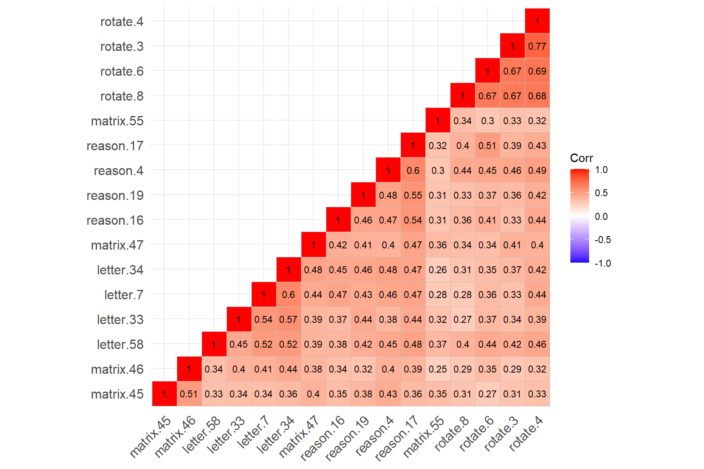
The figure above shows that the four rotation items have created a cluster (see the cluster on the top-right corner), while the remaining SAPA items have created another cluster (see the cluster on the bottom-left corner). The rotation items are strongly correlated with each other (not surprising given that they all focus on the rotation skills); however, the same items have relatively lower correlations with the other items in the dataset. Also, matrix.55 seems to have relatively low correlations with the items from both clusters.
Findings of hierarchical clustering suggest that the SAPA items may not be measuring a single latent trait. However, hierarchical clustering is not a test of dimensionality. To ensure that there is a single factor (i.e., latent trait) underlying the SAPA items, we need to perform factor analysis and evaluate the factor structure of the SAPA items (i.e., dimensionality).
Factor analysis is a statistical modeling technique that aims to explain the common variability among a set of observed variables and transform the variables into a reduced set of variables known as factors (or dimensions). At the core of factor analysis is the desire to reduce the dimensionality of the data from \(p\) observed variables to \(q\) factors, such that \(q < p\). During instrument development or when there are no prior beliefs about the dimensionality or structure of an existing instrument, exploratory factor analysis (EFA) should be considered to investigate the factorial structure of the instrument. To perform EFA, we need to specify the number of factors to extract, how to rotate factors (if the number of factors > 1), and which type of estimation method should be used depending on the nature of the data (e.g., categorical vs. continuous variables).
The psych package includes several functions to
perform factor analytic analysis with different estimation methods. We
will use the fa() function in the psych
package to perform EFA. To use the function, we need to specify the
following items:
cor = "Pearson" (Pearson
correlation); for dichotomous variables, use cor = "tet"
(tetrachoric correlation); for polytomous variables (e.g., Likert
scales), use cor = "poly" (polychoric correlation).First, we will try a one-factor model, evaluate model fit, and determine whether a one-factor (i.e., unidimensional) structure is acceptable for the SAPA items:
# Try one-factor EFA model --> nfactors = 1
efa.model1 <- psych::fa(r = sapa, nfactors = 1, fm = "pa", cor = "tet")# Print the results
print(efa.model1, sort = TRUE) # Show the factor loadings sorted by absolute valueFactor Analysis using method = pa
Call: psych::fa(r = sapa, nfactors = 1, fm = "pa", cor = "tet")
Standardized loadings (pattern matrix) based upon correlation matrix
V PA1 h2 u2 com
rotate.4 14 0.74 0.55 0.45 1
reason.17 3 0.71 0.51 0.49 1
reason.4 1 0.70 0.49 0.51 1
rotate.6 15 0.69 0.47 0.53 1
letter.34 7 0.68 0.46 0.54 1
rotate.3 13 0.68 0.46 0.54 1
letter.7 5 0.67 0.44 0.56 1
letter.58 8 0.66 0.44 0.56 1
reason.19 4 0.64 0.41 0.59 1
rotate.8 16 0.64 0.41 0.59 1
reason.16 2 0.63 0.40 0.60 1
matrix.47 11 0.62 0.39 0.61 1
letter.33 6 0.62 0.39 0.61 1
matrix.46 10 0.56 0.31 0.69 1
matrix.45 9 0.54 0.30 0.70 1
matrix.55 12 0.48 0.23 0.77 1
PA1
SS loadings 6.65
Proportion Var 0.42
Mean item complexity = 1
Test of the hypothesis that 1 factor is sufficient.
The degrees of freedom for the null model are 120 and the objective function was 8.04 with Chi Square of 12198.48
The degrees of freedom for the model are 104 and the objective function was 1.85
The root mean square of the residuals (RMSR) is 0.08
The df corrected root mean square of the residuals is 0.09
The harmonic number of observations is 1523 with the empirical chi square 2304.27 with prob < 0
The total number of observations was 1525 with Likelihood Chi Square = 2806.28 with prob < 0
Tucker Lewis Index of factoring reliability = 0.742
RMSEA index = 0.131 and the 90 % confidence intervals are 0.126 0.135
BIC = 2043.98
Fit based upon off diagonal values = 0.96
Measures of factor score adequacy
PA1
Correlation of (regression) scores with factors 0.96
Multiple R square of scores with factors 0.92
Minimum correlation of possible factor scores 0.84The output shows the factor loadings for each item (see the
PA1 column) and the proportion of explained variance (42%;
see Proportion Var). The factor loadings seem fine (i.e.,
> 0.3), which is the typical cut-off value to determine significant
loadings. We can determine model fit based on model fit indices of root
mean square of residuals (RMSR), root mean square error of approximation
(RMSEA), and Tucker-Lewis Index. We can use Hu
& Bentler (1999)’s guidelines for these model fit indices:
Tucker-Lewis index (TLI) > .95, RMSEA < .06, and RMSR near zero
indicate good model fit. The fit measures in the output show that the
one-factor model does not necessarily fit the sapa dataset. Therefore,
we will try a two-factor model in the next run:
# Try two-factor EFA model --> nfactors=2
efa.model2 <- psych::fa(sapa, nfactors = 2, rotate = "oblimin", fm = "pa", cor = "tet")# Print the results
print(efa.model2, sort = TRUE) # Show the factor loadings sorted by absolute valueFactor Analysis using method = pa
Call: psych::fa(r = sapa, nfactors = 2, rotate = "oblimin", fm = "pa",
cor = "tet")
Standardized loadings (pattern matrix) based upon correlation matrix
item PA1 PA2 h2 u2 com
letter.34 7 0.80 -0.09 0.56 0.44 1.0
letter.7 5 0.78 -0.09 0.53 0.47 1.0
letter.33 6 0.70 -0.05 0.44 0.56 1.0
reason.17 3 0.65 0.11 0.52 0.48 1.1
reason.19 4 0.62 0.05 0.43 0.57 1.0
matrix.46 10 0.59 -0.01 0.34 0.66 1.0
matrix.47 11 0.59 0.07 0.40 0.60 1.0
reason.16 2 0.58 0.09 0.41 0.59 1.0
reason.4 1 0.56 0.19 0.49 0.51 1.2
letter.58 8 0.56 0.15 0.44 0.56 1.1
matrix.45 9 0.56 0.02 0.32 0.68 1.0
matrix.55 12 0.35 0.17 0.23 0.77 1.5
rotate.3 13 -0.03 0.87 0.72 0.28 1.0
rotate.8 16 -0.05 0.85 0.66 0.34 1.0
rotate.4 14 0.09 0.81 0.75 0.25 1.0
rotate.6 15 0.07 0.75 0.64 0.36 1.0
PA1 PA2
SS loadings 4.87 3.03
Proportion Var 0.30 0.19
Cumulative Var 0.30 0.49
Proportion Explained 0.62 0.38
Cumulative Proportion 0.62 1.00
With factor correlations of
PA1 PA2
PA1 1.00 0.63
PA2 0.63 1.00
Mean item complexity = 1.1
Test of the hypothesis that 2 factors are sufficient.
The degrees of freedom for the null model are 120 and the objective function was 8.04 with Chi Square of 12198.48
The degrees of freedom for the model are 89 and the objective function was 0.64
The root mean square of the residuals (RMSR) is 0.04
The df corrected root mean square of the residuals is 0.05
The harmonic number of observations is 1523 with the empirical chi square 551.42 with prob < 7.8e-68
The total number of observations was 1525 with Likelihood Chi Square = 976.61 with prob < 2.1e-149
Tucker Lewis Index of factoring reliability = 0.901
RMSEA index = 0.081 and the 90 % confidence intervals are 0.076 0.086
BIC = 324.26
Fit based upon off diagonal values = 0.99
Measures of factor score adequacy
PA1 PA2
Correlation of (regression) scores with factors 0.95 0.95
Multiple R square of scores with factors 0.90 0.91
Minimum correlation of possible factor scores 0.81 0.81Based on the factor loadings listed under the PA1 and PA2 columns, we see that the first 12 items are highly loaded on the first factor whereas the last four items (i.e., rotation items) are highly loaded on the second factor. This finding is aligned with what we have observed in the correlation matrix plot earlier. Another important finding is that one of the items (matrix.55) is not sufficiently loaded on either of the two factors.
The rest of the output shows that the first factor explains 30% of
the total variance while the second factor explains 19% of the total
variance (see Proportion Var). Compared to the one-factor
model, the two-factor model explains an additional 7% of variance in the
data. The two factors seem to be moderately correlated (\(r = .63\)). The model fit indices show that
the two-factor model fits the data better (though the model fit indices
do not entirely meet the guidelines).
At this point, we need to make a theoretical decision informed by the statistical output: Can we still assume that all the items in the sapa dataset measure the same latent trait? Or, should we exclude the items that do not seem to correlate well with the rest of the items in the dataset? The evidence we obtained from the EFA models suggests that the rotation items may not be the part of the construct measured by the rest of the SAPA items. Also, matrix.55 appears to be a bit problematic. Therefore, we can choose to exclude these five items from the dataset.
In the following section, we will first use the subset()
function (from base R) to drop the rotation items and matrix.55 and save
the new dataset as “sapa_clean”. Next, we will run the one-factor EFA
model again using the items in sapa_clean.
# Drop the problematic items
sapa_clean <- subset(sapa, select = -c(rotate.3, rotate.4, rotate.6, rotate.8, matrix.55))
# Try one-factor EFA model with the clean dataset
efa.model3 <- psych::fa(sapa_clean, nfactors = 1, fm = "pa", cor = "tet")print(efa.model3, sort=TRUE)Factor Analysis using method = pa
Call: psych::fa(r = sapa_clean, nfactors = 1, fm = "pa", cor = "tet")
Standardized loadings (pattern matrix) based upon correlation matrix
V PA1 h2 u2 com
letter.34 7 0.74 0.55 0.45 1
reason.17 3 0.73 0.53 0.47 1
letter.7 5 0.72 0.52 0.48 1
reason.4 1 0.69 0.48 0.52 1
reason.19 4 0.66 0.44 0.56 1
letter.33 6 0.65 0.43 0.57 1
letter.58 8 0.65 0.42 0.58 1
reason.16 2 0.64 0.41 0.59 1
matrix.47 11 0.63 0.39 0.61 1
matrix.46 10 0.58 0.34 0.66 1
matrix.45 9 0.56 0.32 0.68 1
PA1
SS loadings 4.84
Proportion Var 0.44
Mean item complexity = 1
Test of the hypothesis that 1 factor is sufficient.
The degrees of freedom for the null model are 55 and the objective function was 4.54 with Chi Square of 6897.77
The degrees of freedom for the model are 44 and the objective function was 0.37
The root mean square of the residuals (RMSR) is 0.05
The df corrected root mean square of the residuals is 0.05
The harmonic number of observations is 1523 with the empirical chi square 385.76 with prob < 3.7e-56
The total number of observations was 1525 with Likelihood Chi Square = 569.12 with prob < 1.9e-92
Tucker Lewis Index of factoring reliability = 0.904
RMSEA index = 0.088 and the 90 % confidence intervals are 0.082 0.095
BIC = 246.61
Fit based upon off diagonal values = 0.99
Measures of factor score adequacy
PA1
Correlation of (regression) scores with factors 0.95
Multiple R square of scores with factors 0.90
Minimum correlation of possible factor scores 0.80The output above shows that the model fit has improved significantly after removing the rotation items and matrix.55 from the dataset. Thus, we will use the sapa_clean dataset for subsequent analyses. Please note that for the sake of brevity, we followed a data-driven approach to determine whether the problematic items need to be removed from the data. A more suitable solution would be to review the content of these items carefully and the output of the EFA models, and make a decision considering both the theoretical assumptions regarding the items and the statistical findings.
After an instrument has been developed and validated, we have a sense of its dimensionality (i.e., factor structure) and which observed variables (i.e., items) should load onto which factor(s). In this setting, it is more appropriate to consider confirmatory factor analysis (CFA) for examining the factor structure. Unlike with EFA, in CFA the researcher must create a theoretically-justified factor model by specifying the factor(s) and which items are associated with each factor and evaluate its fit to the data.
Following the results of EFA from the previous section, we will go
ahead and fit a one-factor CFA model to the sapa_clean dataset. To
perform CFA in R, as well as path analysis and structural equation
modeling, we can use the lavaan package (Rosseel et al., 2023), which stands for
latent variable
analysis. The lavaan package uses its
own special model syntax. For conducting a CFA, we need to define a
model and then estimate the model using the cfa() function.
The model definition below begins with a single quote and ends with the
same single quote. We named our factor as “f” (or, we could name it as
“intelligence”) and listed the items associated with this factor (i.e.,
SAPA items).
# Define a single factor
sapa_model <- 'f =~ reason.4 + reason.16 + reason.17 + reason.19 + letter.7 +
letter.33 + letter.34 + letter.58 + matrix.45 + matrix.46 + matrix.47'Next, we will run the CFA model for the model defined above. If the items are either dichotomous or polytomous, then the estimator should be either “MLR” or “WLSMV” because these estimators are more robust against non-normality, which is usually the case for categorical data. In this example, we will use “MLR” (i.e., Robust Maximum Likelihood) to estimate our CFA model.
# Estimate the model
cfa_sapa <- lavaan::cfa(sapa_model, data = sapa_clean, estimator = "MLR")
# Print the output
summary(cfa_sapa, fit.measures=TRUE, standardized = TRUE)lavaan 0.6.13 ended normally after 39 iterations
Estimator ML
Optimization method NLMINB
Number of model parameters 22
Used Total
Number of observations 1523 1525
Model Test User Model:
Standard Scaled
Test Statistic 182.266 160.148
Degrees of freedom 44 44
P-value (Chi-square) 0.000 0.000
Scaling correction factor 1.138
Yuan-Bentler correction (Mplus variant)
Model Test Baseline Model:
Test statistic 3225.104 2771.330
Degrees of freedom 55 55
P-value 0.000 0.000
Scaling correction factor 1.164
User Model versus Baseline Model:
Comparative Fit Index (CFI) 0.956 0.957
Tucker-Lewis Index (TLI) 0.945 0.947
Robust Comparative Fit Index (CFI) 0.958
Robust Tucker-Lewis Index (TLI) 0.948
Loglikelihood and Information Criteria:
Loglikelihood user model (H0) -10128.806 -10128.806
Scaling correction factor 0.697
for the MLR correction
Loglikelihood unrestricted model (H1) -10037.673 -10037.673
Scaling correction factor 0.991
for the MLR correction
Akaike (AIC) 20301.613 20301.613
Bayesian (BIC) 20418.838 20418.838
Sample-size adjusted Bayesian (SABIC) 20348.950 20348.950
Root Mean Square Error of Approximation:
RMSEA 0.045 0.042
90 Percent confidence interval - lower 0.039 0.035
90 Percent confidence interval - upper 0.052 0.048
P-value H_0: RMSEA <= 0.050 0.858 0.982
P-value H_0: RMSEA >= 0.080 0.000 0.000
Robust RMSEA 0.044
90 Percent confidence interval - lower 0.037
90 Percent confidence interval - upper 0.052
P-value H_0: Robust RMSEA <= 0.050 0.887
P-value H_0: Robust RMSEA >= 0.080 0.000
Standardized Root Mean Square Residual:
SRMR 0.032 0.032
Parameter Estimates:
Standard errors Sandwich
Information bread Observed
Observed information based on Hessian
Latent Variables:
Estimate Std.Err z-value P(>|z|) Std.lv Std.all
f =~
reason.4 1.000 0.268 0.558
reason.16 0.868 0.055 15.901 0.000 0.232 0.506
reason.17 0.990 0.051 19.454 0.000 0.265 0.577
reason.19 0.967 0.055 17.589 0.000 0.259 0.532
letter.7 1.076 0.061 17.547 0.000 0.288 0.588
letter.33 0.987 0.062 15.926 0.000 0.264 0.534
letter.34 1.104 0.062 17.859 0.000 0.296 0.607
letter.58 0.958 0.056 17.178 0.000 0.256 0.516
matrix.45 0.830 0.055 15.231 0.000 0.222 0.445
matrix.46 0.865 0.058 14.907 0.000 0.232 0.465
matrix.47 0.914 0.059 15.419 0.000 0.245 0.502
Variances:
Estimate Std.Err z-value P(>|z|) Std.lv Std.all
.reason.4 0.159 0.006 25.914 0.000 0.159 0.689
.reason.16 0.157 0.006 27.641 0.000 0.157 0.744
.reason.17 0.141 0.006 24.298 0.000 0.141 0.668
.reason.19 0.170 0.006 28.392 0.000 0.170 0.717
.letter.7 0.157 0.006 25.381 0.000 0.157 0.655
.letter.33 0.175 0.006 28.471 0.000 0.175 0.715
.letter.34 0.150 0.006 23.743 0.000 0.150 0.632
.letter.58 0.181 0.006 32.745 0.000 0.181 0.734
.matrix.45 0.200 0.005 36.477 0.000 0.200 0.802
.matrix.46 0.194 0.006 34.265 0.000 0.194 0.783
.matrix.47 0.177 0.006 30.143 0.000 0.177 0.748
f 0.072 0.006 11.727 0.000 1.000 1.000The cfa() function returns a long output with model fit
statistics, model parameters, and additional information, but we will
only focus on model fit indices of Comparative Fit Index (CFI),
Tucker-Lewis Index (TLI), and Root Mean Square Error of Approximation
(RMSEA) to interpret the fit of the one-factor model to the sapa_clean
dataset (please refer to UCLA Statistical
Consulting Group’s website for a more detailed coverage of CFA model
estimation using lavaan. The website also includes
annotated examples of a variety of statistical analyses using different
software programs such as SPSS, SAS, R, and Mplus).
In the output, both CFI and TLI values (under the “Robust” column) are larger than .95, indicating good model fit. Similarly, the RMSEA value of .042 for the one-factor model suggests good model fit (since it is less than the suggested cut-off value of .06). Also, the “Std.all” column in the “Latent Variables: f =~” section shows standardized factor loadings for the items. We see that all the items in sapa_clean have a high factor loading (> 0.3), indicating an adequate relationship with the estimated factor.
Before we start the IRT analysis, let’s take a look at the items by
running item analysis based on Classical Test Theory (CTT). This will
allow us to have a final look at the items that we identified based on
EFA and CFA and ensure that the response dataset is ready for IRT
analysis. We will use the alpha() function from the
psych package for running CTT-based item analysis.
# Run the item analysis and save it as itemanalysis_psych
itemanalysis_psych <- psych::alpha(x = sapa_clean)
# Print the results
itemanalysis_psych
Reliability analysis
Call: psych::alpha(x = sapa_clean)
raw_alpha std.alpha G6(smc) average_r S/N ase mean sd median_r
0.81 0.81 0.8 0.28 4.3 0.0072 0.6 0.29 0.28
95% confidence boundaries
lower alpha upper
Feldt 0.8 0.81 0.82
Duhachek 0.8 0.81 0.82
Reliability if an item is dropped:
raw_alpha std.alpha G6(smc) average_r S/N alpha se var.r med.r
reason.4 0.79 0.79 0.78 0.28 3.8 0.0079 0.0024 0.28
reason.16 0.80 0.80 0.79 0.28 4.0 0.0077 0.0024 0.28
reason.17 0.79 0.79 0.78 0.28 3.8 0.0079 0.0021 0.27
reason.19 0.80 0.80 0.78 0.28 3.9 0.0078 0.0025 0.28
letter.7 0.79 0.79 0.78 0.28 3.8 0.0080 0.0021 0.27
letter.33 0.80 0.80 0.78 0.28 3.9 0.0078 0.0022 0.28
letter.34 0.79 0.79 0.78 0.27 3.8 0.0081 0.0020 0.27
letter.58 0.80 0.80 0.79 0.28 3.9 0.0077 0.0024 0.28
matrix.45 0.80 0.80 0.79 0.29 4.1 0.0076 0.0021 0.29
matrix.46 0.80 0.80 0.79 0.29 4.0 0.0076 0.0023 0.29
matrix.47 0.80 0.80 0.79 0.28 4.0 0.0077 0.0027 0.28
Item statistics
n raw.r std.r r.cor r.drop mean sd
reason.4 1523 0.61 0.61 0.55 0.50 0.64 0.48
reason.16 1524 0.56 0.57 0.50 0.45 0.70 0.46
reason.17 1523 0.62 0.62 0.57 0.51 0.70 0.46
reason.19 1523 0.59 0.59 0.53 0.47 0.62 0.49
letter.7 1524 0.63 0.63 0.58 0.52 0.60 0.49
letter.33 1523 0.59 0.59 0.53 0.47 0.57 0.50
letter.34 1523 0.64 0.64 0.60 0.54 0.61 0.49
letter.58 1525 0.58 0.57 0.51 0.46 0.44 0.50
matrix.45 1523 0.54 0.53 0.46 0.41 0.53 0.50
matrix.46 1524 0.55 0.55 0.47 0.42 0.55 0.50
matrix.47 1523 0.57 0.57 0.50 0.45 0.61 0.49
Non missing response frequency for each item
0 1 miss
reason.4 0.36 0.64 0
reason.16 0.30 0.70 0
reason.17 0.30 0.70 0
reason.19 0.38 0.62 0
letter.7 0.40 0.60 0
letter.33 0.43 0.57 0
letter.34 0.39 0.61 0
letter.58 0.56 0.44 0
matrix.45 0.47 0.53 0
matrix.46 0.45 0.55 0
matrix.47 0.39 0.61 0The output shows that the reliability is \(\alpha = .81\), suggesting that the SAPA items have high internal consistency. In the “Reliability if an item is dropped” section, we see that removing any of the SAPA items does not necessarily improve the coefficient alpha, suggesting that all the items are essential. Lastly, in the “Item statistics” section, we can see that point-biserial correlations under the r.drop and r.cor columns are quite high (i.e., \(> .20\)), indicating that all the SAPA items can distinguish low- and high-achieving students adequately.
In this section, we will see how to estimate different types of dichotomous IRT models using the sapa_clean dataset. This process is known as “item calibration”. We will calibrate the SAPA items using the following IRT models:
| Model | Description | Parameters |
|---|---|---|
| Rasch | Rasch Model | b |
| 1PL | One-Parameter Logistic Model | b, a (same for all items) |
| 2PL | Two-Parameter Logistic Model | b, a (unique to each item) |
| 3PL | Three-Parameter Logistic Model | b, a (unique to each item), c |
By clicking on each of the following tabs, you can see the estimation of item parameters for the four IRT models listed above.
In the Rasch model, the probability of answering item \(i\) correctly for examinee \(j\) with ability \(\theta_j\) (i.e., \(P(X_{ij} = 1)\)) can be written as follows:
\[P(X_{ij} = 1) = \frac{e^{(\theta_j - b_i)}}{1 + e^{(\theta_j - b_i)}}\]
where \(b_i\) is the item difficulty level of item \(i\). Using the Rasch model, we can estimate a unique difficulty parameter for each item and an ability parameter for each examinee.
Now, let’s calibrate the items in the sapa_clean dataset using the Rasch model.
# Estimate the item parameters
model_rasch <- mirt::mirt(data = sapa_clean, # data with only item responses
model = 1, # 1 refers to the unidimensional IRT model
itemtype = "Rasch") # IRT model we want to use for item calibrationNext, we will extract the estimated item parameters using the
coef() function and print them.
# Extract the item parameters
param_rasch <- coef(model_rasch, # the model object with the estimated parameters
IRTpars = TRUE, # whether we want to get traditional IRT parameters
simplify = TRUE) # simplify the model output
# What is saved in this object?
str(param_rasch)List of 3
$ items: num [1:11, 1:4] 1 1 1 1 1 1 1 1 1 1 ...
..- attr(*, "dimnames")=List of 2
.. ..$ : chr [1:11] "reason.4" "reason.16" "reason.17" "reason.19" ...
.. ..$ : chr [1:4] "a" "b" "g" "u"
$ means: Named num 0
..- attr(*, "names")= chr "F1"
$ cov : num [1, 1] 2.18
..- attr(*, "dimnames")=List of 2
.. ..$ : chr "F1"
.. ..$ : chr "F1"
- attr(*, "class")= chr [1:2] "mirt_list" "list"# It is a list with a bunch of stuff, but... we only want to keep the item parameters
param_rasch <- as.data.frame(param_rasch$items)
# Print the item parameters
param_rasch a b g u
reason.4 1 -0.8036570 0 1
reason.16 1 -1.1662841 0 1
reason.17 1 -1.1606760 0 1
reason.19 1 -0.6548906 0 1
letter.7 1 -0.5631862 0 1
letter.33 1 -0.3996201 0 1
letter.34 1 -0.6432872 0 1
letter.58 1 0.3202458 0 1
matrix.45 1 -0.1425890 0 1
matrix.46 1 -0.2769246 0 1
matrix.47 1 -0.6471529 0 1In the output, we see that the a parameter is fixed to “1” for all items, the b parameters are uniquely estimated for each item, and the c parameter (shown as “g” as guessing) is fixed to zero for all items. The “u” column indicates the upper asymptote representing the maximum value of the probability of success (this parameter only matters for the 4-parameter logistic (4PL) model and yes, there is indeed a 4PL model… 😩).
In the one-parameter logistic (1PL) model, the probability of answering item \(i\) correctly for examinee \(j\) with ability \(\theta_j\) can be written as follows:
\[P(X_{ij} = 1) = \frac{e^{a(\theta_j - b_i)}}{1 + e^{a(\theta_j - b_i)}}\]
where \(b_i\) is the item difficulty level of item \(i\) and \(a\) is the item discrimination parameter of item \(i\) (though it is not unique to item \(i\)). Using the 1PL model, we can estimate a unique difficulty parameter for each item, a discrimination parameter fixed across all the items, and an ability parameter for each examinee.
Now, we will calibrate the items in the sapa_clean dataset using the
1PL model. Estimating the 1PL model requires a special setup in the
mirt package. We will use the two-parameter logistic
(2PL) model but constrain the discrimination parameters to be fixed
across all the items, which will give us the 1PL model (i.e., unique
difficulty parameters but a fixed discrimination). Instead of using
model = 1 in the mirt() function, we will
define a model where we indicate the latent variable (called “F” in the
following example), how many items are defining this model (i.e.,
F = 1-11), and which parameters are to be constrained. We
use CONSTRAIN = (1-11, a1) to estimate a single
discrimination parameter (called “a1” in mirt) for all
of the 11 items in the dataset.
# Define the 1PL model explicitly
model <- "F = 1-11
CONSTRAIN = (1-11, a1)"
# Estimate the item parameters
model_1PL <- mirt::mirt(data = sapa_clean, # data with only item responses
model = model, # our special model for 1PL
itemtype = "2PL") # IRT model we want to use for item calibrationNext, we will extract the estimated item parameters using the
coef() function and print them.
# Extract the item parameters
param_1PL <- coef(model_1PL, # the model object with the estimated parameters
IRTpars = TRUE, # whether we want to get traditional IRT parameters
simplify = TRUE) # simplify the model output
# Only keep the item parameters
param_1PL <- as.data.frame(param_1PL$items)
# Print the item parameters
param_1PL a b g u
reason.4 1.478453 -0.54366033 0 1
reason.16 1.478453 -0.78897535 0 1
reason.17 1.478453 -0.78518119 0 1
reason.19 1.478453 -0.44301911 0 1
letter.7 1.478453 -0.38097931 0 1
letter.33 1.478453 -0.27032349 0 1
letter.34 1.478453 -0.43516935 0 1
letter.58 1.478453 0.21671151 0 1
matrix.45 1.478453 -0.09643058 0 1
matrix.46 1.478453 -0.18731461 0 1
matrix.47 1.478453 -0.43778452 0 1In the output, we see that the a parameter is estimated but it is fixed to “1.478” for all items, the b parameters are uniquely estimated for each item, the c parameter (i.e., g) is fixed to zero, and the upper asymptote (i.e., “u”) is fixed to 1 for all items. If we compare the difficulty parameters from Rasch and 1PL, we can see that they are not necessarily the same. Estimating the discrimination parameter (instead of assuming \(a = 1\)) has changed the parameter estimates in the 1PL model. However, they are perfectly correlated.
# Combine the difficulty parameters
b_pars <- data.frame(rasch = param_rasch$b,
onePL = param_1PL$b)
# Print the difficulty parameters
b_pars rasch onePL
1 -0.8036570 -0.54366033
2 -1.1662841 -0.78897535
3 -1.1606760 -0.78518119
4 -0.6548906 -0.44301911
5 -0.5631862 -0.38097931
6 -0.3996201 -0.27032349
7 -0.6432872 -0.43516935
8 0.3202458 0.21671151
9 -0.1425890 -0.09643058
10 -0.2769246 -0.18731461
11 -0.6471529 -0.43778452# Are they correlated?
cor(b_pars$rasch, b_pars$onePL)[1] 1# Let's also plot them -- see that they are perfectly aligned on a diagonal line
plot(b_pars$rasch, b_pars$onePL,
xlab = "Difficulty (Rasch)",
ylab = "Difficulty (1PL)",
main = "Rasch vs. 1PL Difficulty Parameters")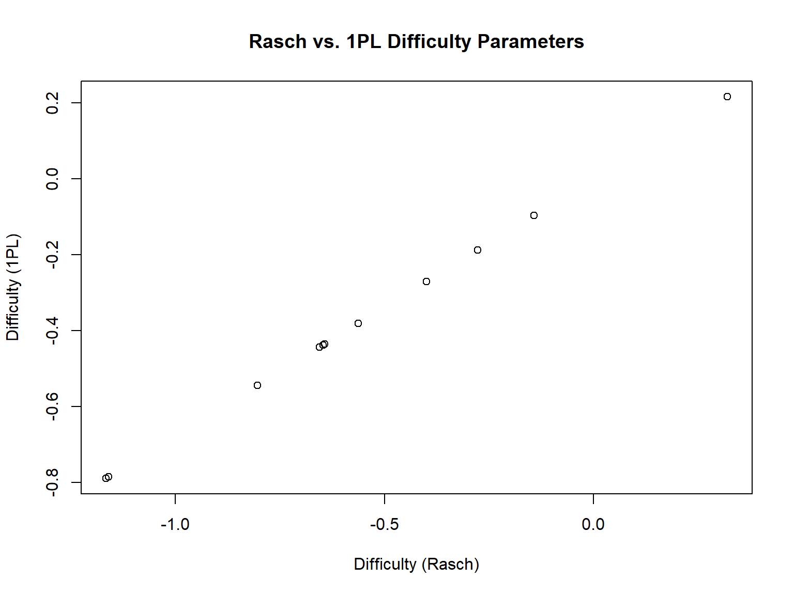
In the two-parameter logistic (2PL) model, the probability of answering item \(i\) correctly for examinee \(j\) with ability \(\theta_j\) can be written as follows:
\[P(X_{ij} = 1) = \frac{e^{a_i(\theta_j - b_i)}}{1 + e^{a_i(\theta_j - b_i)}}\]
where \(b_i\) is the item difficulty level of item \(i\) and \(a_i\) is the item discrimination parameter of item \(i\). Using the 1PL model, we can estimate a unique difficulty parameter and a unique discrimination parameter for each item, and an ability parameter for each examinee.
Let’s calibrate the items in the sapa_clean dataset using the 2PL model. Fortunately, estimating the 2PL model does not require any special set up. We will simply define itemtype as “2PL” and estimate the parameters as we have done for the Rasch model.
# Estimate the item parameters
model_2PL <- mirt::mirt(data = sapa_clean, # data with only item responses
model = 1, # 1 refers to the unidimensional IRT model
itemtype = "2PL") # IRT model we want to use for item calibrationNext, we will extract the estimated item parameters using the
coef() function and print them.
# Extract the item parameters
param_2PL <- coef(model_2PL, # the model object with the estimated parameters
IRTpars = TRUE, # whether we want to get traditional IRT parameters
simplify = TRUE) # simplify the model output
# Only keep the item parameters
param_2PL <- as.data.frame(param_2PL$items)
# Print the item parameters
param_2PL a b g u
reason.4 1.617373 -0.5207488 0 1
reason.16 1.438542 -0.8024071 0 1
reason.17 1.815734 -0.7110276 0 1
reason.19 1.476410 -0.4452733 0 1
letter.7 1.769203 -0.3501781 0 1
letter.33 1.458363 -0.2743739 0 1
letter.34 1.873985 -0.3896748 0 1
letter.58 1.456838 0.2163896 0 1
matrix.45 1.111961 -0.1170979 0 1
matrix.46 1.198550 -0.2142262 0 1
matrix.47 1.343574 -0.4638246 0 1In the output, we see that the a and b parameters are uniquely estimated for each item, the c parameter (i.e., g) is fixed to zero, and the upper asymptote (i.e., “u”) is fixed to 1 for all items. The discrimination parameters seem to vary across the items (e.g., \(a = 1.816\) for reason.17 and \(a = 1.112\) for matrix.45). Let’s see whether the difficulty parameters from the 1PL and 2PL models are similar:
# Combine the difficulty parameters
b_pars <- data.frame(onePL = param_1PL$b,
twoPL = param_2PL$b)
# Print the difficulty parameters
b_pars onePL twoPL
1 -0.54366033 -0.5207488
2 -0.78897535 -0.8024071
3 -0.78518119 -0.7110276
4 -0.44301911 -0.4452733
5 -0.38097931 -0.3501781
6 -0.27032349 -0.2743739
7 -0.43516935 -0.3896748
8 0.21671151 0.2163896
9 -0.09643058 -0.1170979
10 -0.18731461 -0.2142262
11 -0.43778452 -0.4638246# Are they correlated? Yes, they are!
cor(b_pars$onePL, b_pars$twoPL)[1] 0.9945404In the three-parameter logistic (3PL) model, the probability of answering item \(i\) correctly for examinee \(j\) with ability \(\theta_j\) can be written as follows:
\[P(X_{ij} = 1) = c_i + (1 - c_i)\frac{e^{a_i(\theta_j - b_i)}}{1 + e^{a_i(\theta_j - b_i)}}\]
where \(b_i\) is the item difficulty level of item \(i\), \(a_i\) is the item discrimination parameter of item \(i\), and \(c_i\) is the guessing parameter (i.e., lower asymptote) of item \(i\). Using the 3PL model, we can estimate unique difficulty, discrimination, and guessing parameters for each item, and an ability parameter for each examinee.
Let’s calibrate the items in the sapa_clean dataset using the 3PL model. This time, we will define itemtype as “3PL” and then estimate the parameters.
# Estimate the item parameters
model_3PL <- mirt::mirt(data = sapa_clean, # data with only item responses
model = 1, # 1 refers to the unidimensional IRT model
itemtype = "3PL") # IRT model we want to use for item calibrationNext, we will extract the estimated item parameters using the
coef() function and print them.
# Extract the item parameters
param_3PL <- coef(model_3PL, # the model object with the estimated parameters
IRTpars = TRUE, # whether we want to get traditional IRT parameters
simplify = TRUE) # simplify the model output
# Only keep the item parameters
param_3PL <- as.data.frame(param_3PL$items)
# Print the item parameters
param_3PL a b g u
reason.4 1.884624 -0.3414468 0.0980052153 1
reason.16 1.447975 -0.7940507 0.0018842261 1
reason.17 1.821866 -0.7033461 0.0022764778 1
reason.19 1.474616 -0.4414966 0.0004529236 1
letter.7 1.883311 -0.2785185 0.0397054746 1
letter.33 1.466089 -0.2618356 0.0050298074 1
letter.34 1.867208 -0.3841286 0.0013212878 1
letter.58 1.454813 0.2217521 0.0011979033 1
matrix.45 1.123319 -0.1107948 0.0015351177 1
matrix.46 1.581996 0.1071612 0.1475558630 1
matrix.47 1.356634 -0.4520886 0.0037671142 1In the output, we see that the a, b, and c parameters are uniquely estimated for each item, and the upper asymptote (i.e., “u”) is fixed to 1 for all items. Overall, most SAPA items have very low guessing parameters. The largest guessing parameter belongs to matrix.46 (\(c = 0.147\)).
Once we calibrate the items using a particular IRT model, we can also check the response functions for each item, as well as for the entire instrument, visually. In the following section, we will create item- and test-level visualizations for the SAPA items using the item parameters we have obtained from the IRT models.
Let’s begin with the item characteristic curves (ICC). We will use
itemplot() to see the ICC for a specific item (i.e.,
item = 10 for creating an ICC for item 10). We use
type = "trace" because ICCs are also known as tracelines.
In the ICC, the x-axis shows the latent trait (i.e., \(\theta\)) and the y-axis shows the
probability of answering the item correctly (ranging from 0 to 1).
# Item 10 - 1PL model
mirt::itemplot(model_1PL,
item = 10, # which item to plot
type = "trace") # traceline (i.e., ICC)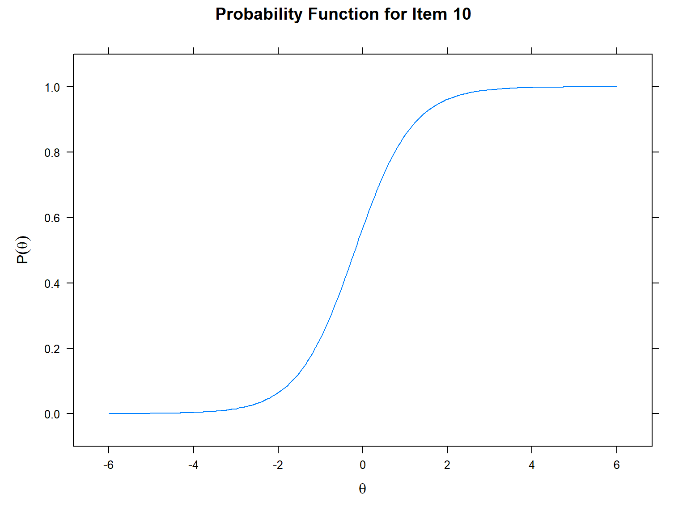
If we want to plot ICCs for more than one item, then we can the
plot() function. We need to specify for which items we want
to create an ICC using the which.items argument:
# ICCs for items 1, 3, and 5 in the 2PL model
plot(model_2PL,
type = "trace",
which.items = c(1, 3, 5)) # items to be plotted (i.e., their positions in the data)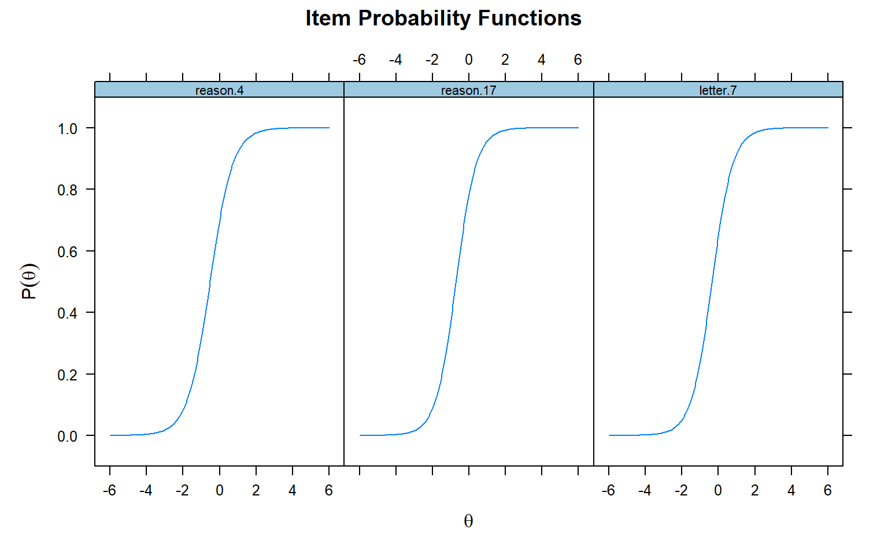
Also, we can plot the ICCs for all the items together using the same
plot() function. Deleting the which.items
argument will return the ICCs for all the items in a single plot. Now,
let’s see the ICCs for all SAPA items using the 3PL model:
# All ICCs in 3PL model
plot(model_3PL, type = "trace")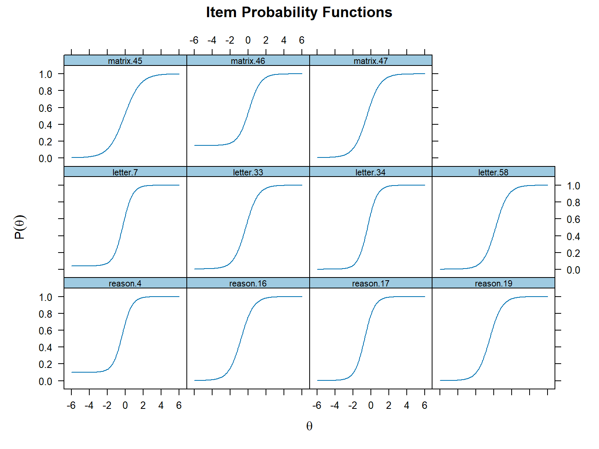
Next, we will use the plot() function and
type = "score" to obtain test characteristic curves or TCC
(i.e., sum of the individual ICCs). In the TCC, the x-axis shows the
latent trait (i.e., \(\theta\)) and the
y-axis shows the expected (raw) score based on the entire instrument
(ranging from 0 to the maximum raw score possible on the
instrument).
plot(model_2PL, type = "score")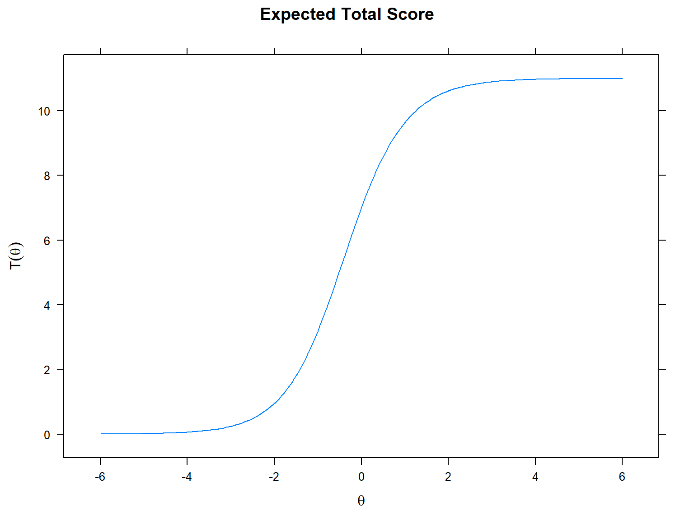
One of the most important concepts in IRT is “item information”, which refers to the level of information a particular item can provide at each level of the latent trait. The higher the information, the better measurement accuracy. We can visualize the information level of an item using the item information function (IIF). Another related concept is the standard error (also known as the conditional standard error of measurement; cSEM), which can be calculated as the reciprocal of the square root of the amount of item information:
\[SE_i(\theta) = \frac{1}{\sqrt{(I_i(\theta)})},\] where \(I_i(\theta)\) is the information of item \(i\) at the latent trait \(\theta\) and \(SE_i(\theta)\) is the standard error of item \(i\) at the latent trait \(\theta\).
In the following example, we will plot the IIF and SE together for
item 1 based on the 2PL model. We will use the itemplot()
function with the type = "infoSE" argument. Alternatively,
we could use type = "info" or type = "SE" to
plot the IIF and SE separately. In the following plot, the x-axis shows
the latent trait (i.e., \(\theta\)),
the y-axis on the left shows item information, and the y-axis on the
right shows the standard error.
mirt::itemplot(model_2PL, # IRT model that stores the item information
item = 1, # which item to plot
type = "infoSE") # plot type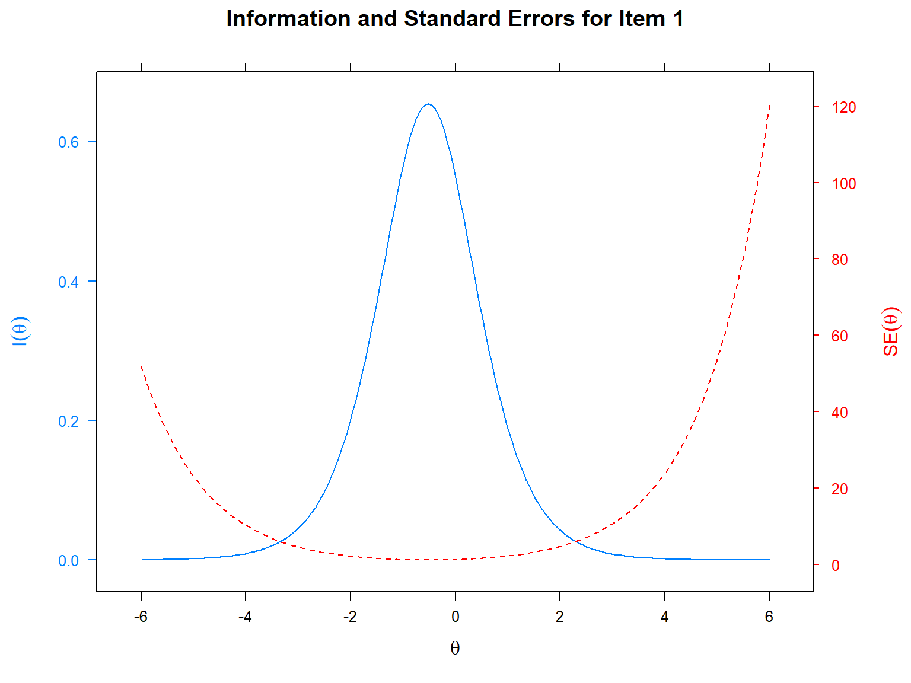
We can also view the IIFs for all the items in a single plot using
the plot() function with the
type = "infotrace" argument:
plot(model_rasch, type = "infotrace")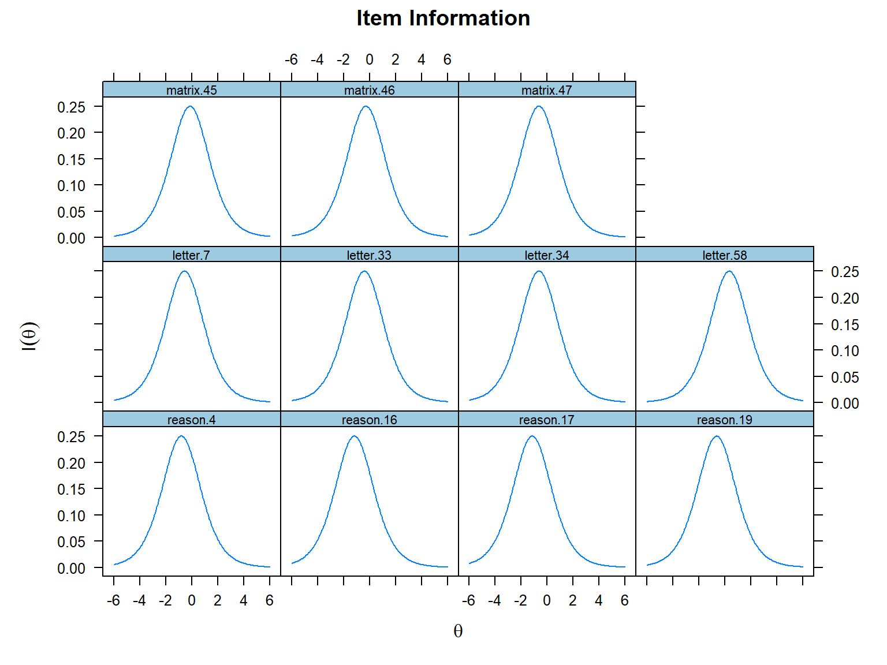
In addition to IIF and SE at the item level, we can also plot the
information and SE values at the test level. That is, we can see the
test information function (TIF) and the SE across all the items. In the
following example, we will use the plot() function with the
type = "infoSE" argument to produce a single plot of TIF
and SE (we can also use either “info” or “SE” to plot them separately).
In the plot, the x-axis shows the latent trait (i.e., \(\theta\)), the y-axis on the left shows the
test information, and the y-axis on the right shows the total standard
error for the SAPA items.
# TIF and SE for the 3PL model
plot(model_3PL, type = "infoSE")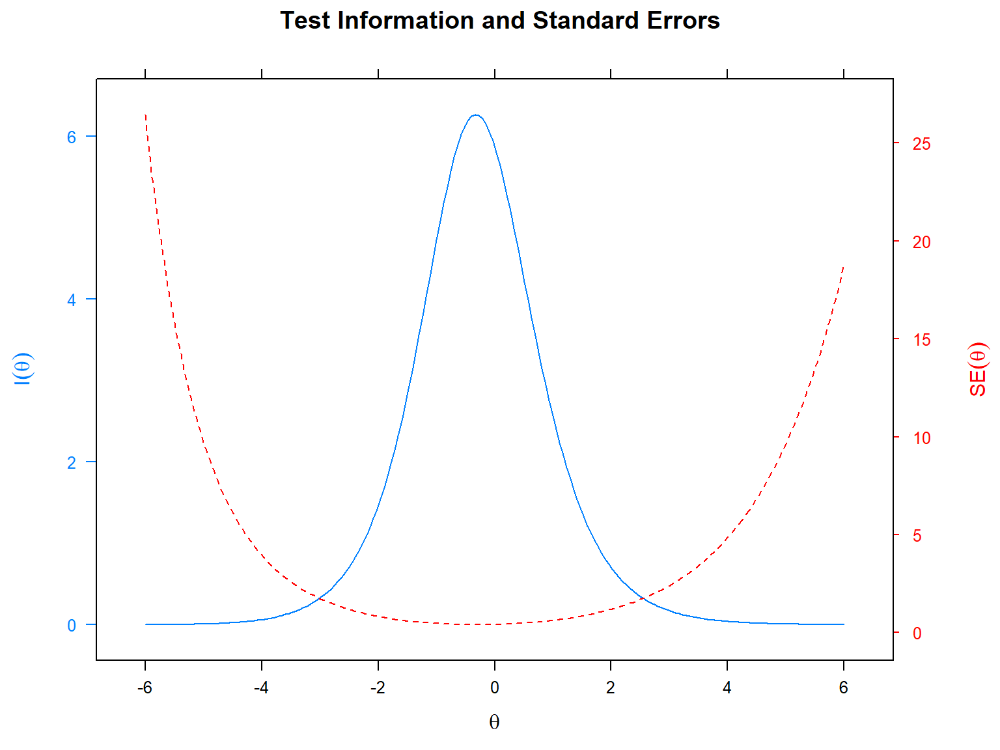
Another useful visualization for IRT models is the item fit plot.
This visualization allows us to inspect the fit of each item to the
selected IRT model by plotting the empirical values (i.e., observed
responses) against the predicted values (i.e., responses expected by the
selected IRT model). Using this plot, we can find poorly fitting items.
We will use the itemfit() function and
empirical.plot to indicate which item we want to plot. The
following plots show that the observed values are more aligned with the
ICC produced by the 3PL model compared with the ICC produced by the 1PL
model, suggesting that item 1 fits the 3PL model better.
# Item fit plot for item 1 in the 1PL model
mirt::itemfit(model_1PL, empirical.plot = 1)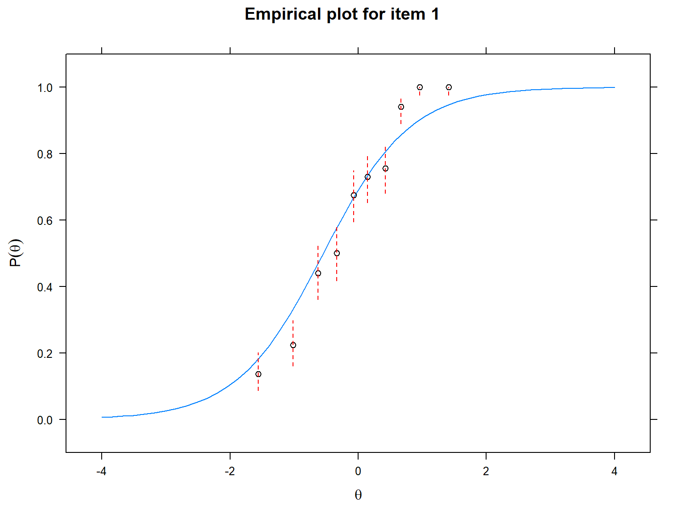
# Item fit plot for item 1 in the 3PL model
mirt::itemfit(model_3PL, empirical.plot = 1)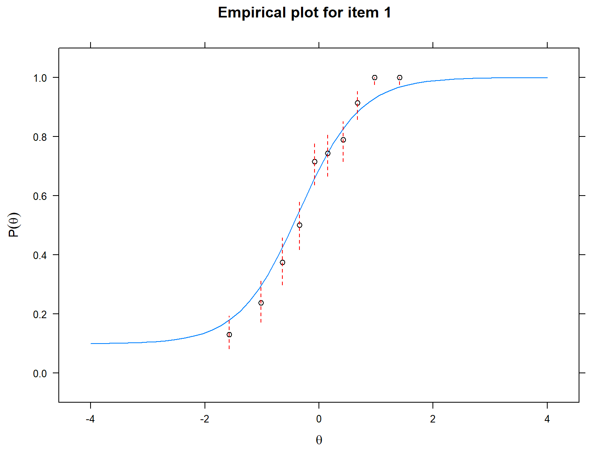
The final visualization tool that we will use is called item-person map (also known as the Wright map in the IRT literature). An item-person map displays the location of item difficulty parameters and ability parameters (i.e., latent trait estimates) along the same logit scale. Item-person maps are very useful for comparing the spread of the item difficulty parameters against the distribution of the ability parameters. The item difficulty parameters are ideally expected to cover the whole logit scale to measure all the ability parameters accurately.
In the following example, we will use the ggWrightMap()
function from the ShinyItemAnalysis package (Martinkova et al., 2022) to draw an item-person
map for the Rasch model. This function requires the ability parameters
(i.e., latent trait estimates) and item difficulty parameters from the
Rasch model. We will use fscores() from
mirt to estimate ability parameters (see the next
section for more details on ability estimation). The following
item-person map shows that the SAPA items mostly cover the middle part
of the ability (i.e, latent trait) distribution. There are not enough
items to cover high-achieving examinees (i.e., \(\theta > 1\)) and low-achieving
examinees (i.e., \(\theta < -2\)).
The SAPA instrument needs more items (some difficult and some easy) to
increase measurement accuracy for those examinee groups.
# Estimate the ability parameters for Rasch and save as a vector
theta_rasch <- as.vector(mirt::fscores(model_rasch))
# Use the difficulty and ability parameters to create an item-person map
ShinyItemAnalysis::ggWrightMap(theta = theta_rasch,
b = param_rasch$b,
item.names = colnames(sapa_clean), # item names (optional)
color = "lightblue", # color of ability distribution (optional)
ylab.theta = "Latent Trait", # label for ability distribution (optional)
ylab.b = "Item Difficulty") # label for item difficulty (optional)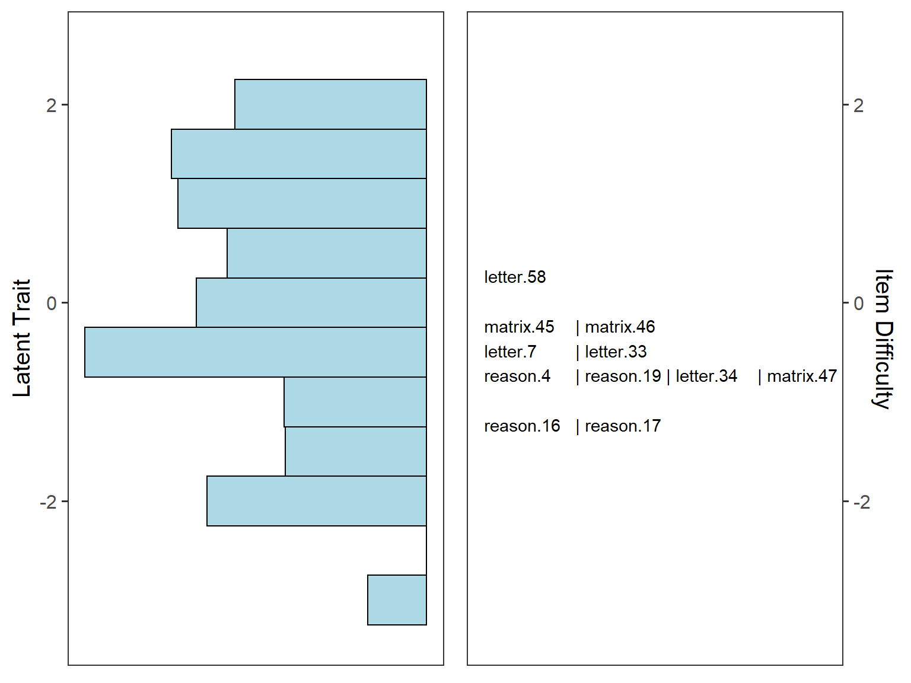
Since we already calibrated the SAPA items using the IRT models, we
can go ahead and estimate ability (i.e., latent trait) parameters for
the examinees using the fscores() function. We will use the
expected a priori (EAP) method to estimate the ability parameters.
Alternatively, we can use method = "ML" (i.e., the maximum
likelihood estimation) but this may not return a valid ability estimate
for examinees who answered all of the items correctly or incorrectly. In
the following example, we will estimate the ability parameters based on
the 3PL model.
# Estimate ability parameters
theta_3PL <- mirt::fscores(model_3PL, # estimated IRT model
method = "EAP", # estimation method
full.scores.SE = TRUE) # return the standard errors
# See the estimated ability parameters
head(theta_3PL) F1 SE_F1
[1,] -1.4854973 0.4943212
[2,] -0.7608005 0.4019847
[3,] -0.4839553 0.3972891
[4,] -1.1384925 0.4684688
[5,] -0.5289825 0.3921521
[6,] 1.4418380 0.6209763# See the distribution of the estimated ability parameters
# (i.e., first column) in theta_3PL
hist(theta_3PL[, 1],
xlab = "Theta", # label for the x axis
main = "Ability Distribution") # title for the plot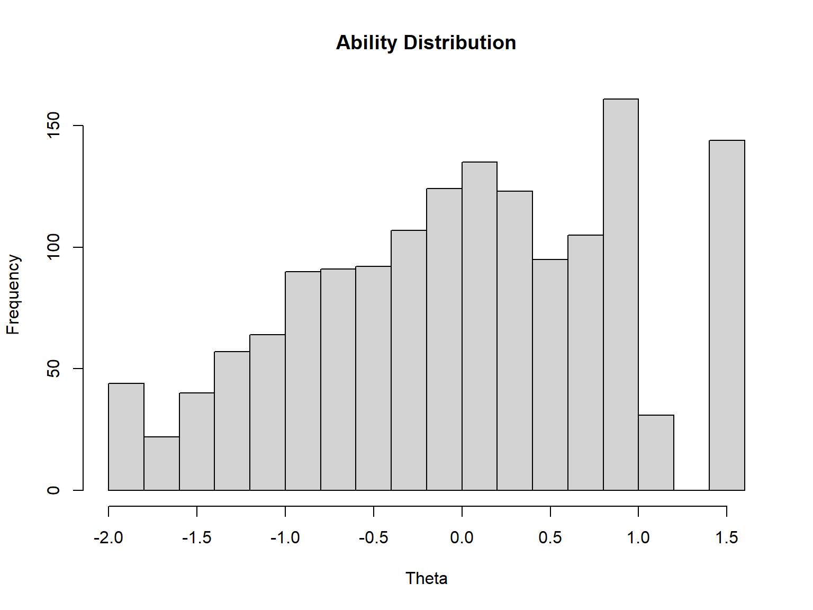
For IRT models, item and test information are the main criteria for determining the accuracy of the measurement process. However, it is also possible to calculate a CTT-like reliability index to evaluate the overall measurement accuracy for IRT models. The IRT test reliability coefficient (\(\rho_{xx'}\)) can be defined as the ratio of the true score variance (i.e., variance of ability estimates) to the observed score variance (the sum of the variance of ability estimates and the average of squared standard errors):
\[\rho_{xx'} = \frac{Var(\hat{\theta})}{Var(\hat{\theta}) + SE(\hat{\theta})^2}\]
This is known as “empirical reliability”. In the following example,
we will use empirical_rxx() function to calculate the
marginal reliability coefficient for the 3PL model.
# Empirical reliability
mirt::empirical_rxx(theta_3PL) F1
0.7825317 In this example, we used the SAPA items which were scored
dichotomously (i.e., 1 for correct and 0 for incorrect). If the SAPA
items were polytomous, how could we estimate the IRT parameters? The
following R codes show how the SAPA items could be calibrated using the
Partial Credit Model and the Graded Response Model via the
mirt() function. As we have done for the Rasch model, we
can use itemtype = "Rasch" to calibrate the items based on
the Partial Credit Model because this model is the polytomous extension
of the Rasch model. For the Graded Response Model, we need
itemtype = "graded". The R codes that we have used above
for extracting item parameters, visualizing the response functions, and
estimating ability parameters for the dichotomous IRT models can also
used for the Partial Credit and Graded Response models.
# Partial Credit Model (PCM)
model_pcm <- mirt::mirt(data = sapa_clean,
model = 1,
itemtype = "Rasch")
# Graded Response Model (GRM)
model_grm <- mirt::mirt(data = sapa_clean,
model = 1,
itemtype = "graded")